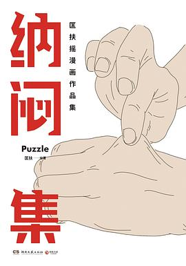

《纳闷集》

8.6
★★★★☆
豆瓣评分 · 18,924 人评价
当代青年都市心理的诗性画卷，以克制细腻的分镜与长对白，解构现代人在亲密关系、职场周旋与返乡逃离中的隐秘困惑与生活顿悟。
总体观点
《纳闷集》开创了一种极具个人辨识度的“漫聊式”图文小说叙事。匡扶避开了强情节冲突与大开大合的戏剧化套路，将放大镜对准现代人在日常缝隙中突然袭来的茫然与“纳闷”，捕捉那些难以言明的情感流动。
作品深刻揭示了当代年轻人在原子化社会中的情感困境：渴望连接却恐惧越界，向往逃离却被琐碎规训。通过平实如水却暗藏机锋的对白，读者得以照见自己的脆弱，并在静默的分镜留白中获得深度的心理共振与治愈。
核心观点
-
1. “纳闷”：现代人不可名状的生存隐疾
在高度物质化与目标明确的生活节奏里，突然停顿下来的困惑与不知所措，恰是人找回自我感知、反抗工具化规训的开始。
《私奔》中的中年夫妻在高速服务区吃泡面时，忽然意识到生活其实早已被既定轨道压得透不过气，一场未遂的私奔反而促成了真正的坦诚。 -
2. 群聚狂欢无法稀释的现代性孤独
都市青年在合租屋或酒馆里的热络寒暄，往往是抵抗虚无的临时防空洞；真正的孤独不在于无人问津，而在于即便面对面也难以抵达灵魂深处。
《我们必须去碰头》中几位老友历经数小时通勤聚在火锅店，热气腾腾中各自翻看手机，随后在深夜路灯下互道珍重时的寂寥。 -
3. 别处并无净土：返乡青年的双重失重
从大城市退回故乡小城，并不意味着田园诗的降临；逃离了职场卷曲，却不得不面对更加盘根错节的熟人社会审视与心理落差。
《生活在别处》描绘辞职回县城开咖啡馆的文艺青年，面对父辈催婚与街坊邻里“在外面混不下去”的窃窃私语时的无力与坚持。 -
4. 在沉默与留白中搭建的心灵共振
漫画的分镜不仅承载动作，更通过长时间的背景空镜与人物微表情，传达出语言在表达极致情感时的匮乏与苍白。
匡扶在篇末常用大面积的黄昏天空、旋转的风扇或无人的十字路口，让人物对白在空气中慢慢沉淀发酵。 -
5. 平凡日子的诗意救赎
生活的本质并非英雄主义的史诗，而是由一顿普通的晚饭、一趟拥挤的地铁和一次意外的黄昏漫步组成的微小奇迹，学会接纳平凡即是救赎。
《纳闷的夏天》中女主角在阳台晾晒床单，透过湿润布料迎着夕阳吹来一阵微风，那一刻所有生活的疲惫被完全抚平。
全书结构
-
私奔
面对沉闷家庭日常与情感琐碎的伴侣，如何在一次突如其来的短途逃离中重新找回彼此对话的勇气。
丈夫与妻子在深夜车厢里关于“我们到底从什么时候开始不再好好看对方眼睛”的长段对谈，真实得令人心颤。 -
我们必须去碰头
都市年轻人在合租屋与格子间中的孤独感，朋友之间借由一场看似毫无意义的线下聚会抵抗生活的虚无与悬浮。
分镜细致呈现不同人在地铁换乘通道中奔走的面孔，以及聚会散场后各自回到出租屋独自面对黑暗的巨大空虚。 -
生活在别处
从大城市返回县城的青年面对家乡熟人社会的失落与调适，理想与现实在柴米油盐里的激烈碰撞。
返乡青年坐在父母客厅沙发上，听着亲戚们关于公务员编制待遇的夸耀，手里攥着未卖出的手工艺品发呆。 -
局外人
社交场域里不知所措的内向者独白，解构现代职场与人际交往中的伪装、妥协与防御机制。
描绘主人公在热闹公司团建酒局中偷偷躲进卫生间洗手台，对着镜子深呼吸调整虚假笑容的心理实录。 -
纳闷的夏天
琐碎的生活疑问与隐秘的焦虑，在平凡的夏日午后转化为对生命流动本质的静默注视。
以蝉鸣、切开西瓜的清脆声响以及融化的冰淇淋为视听线索，编织出一段关于青春逝去与接纳当下的唯美散文诗。